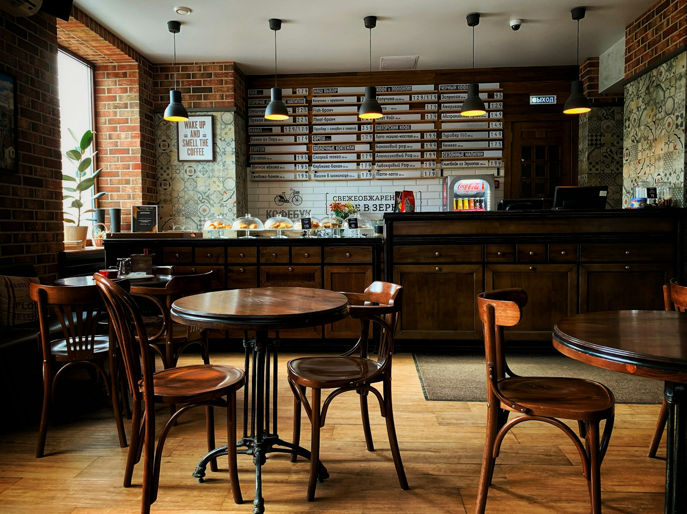
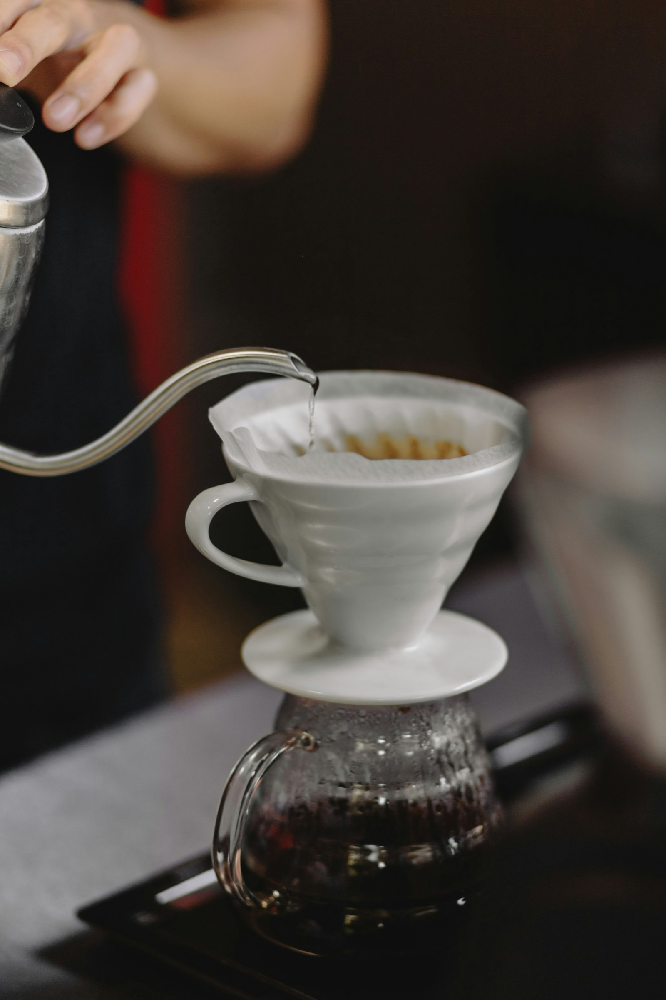
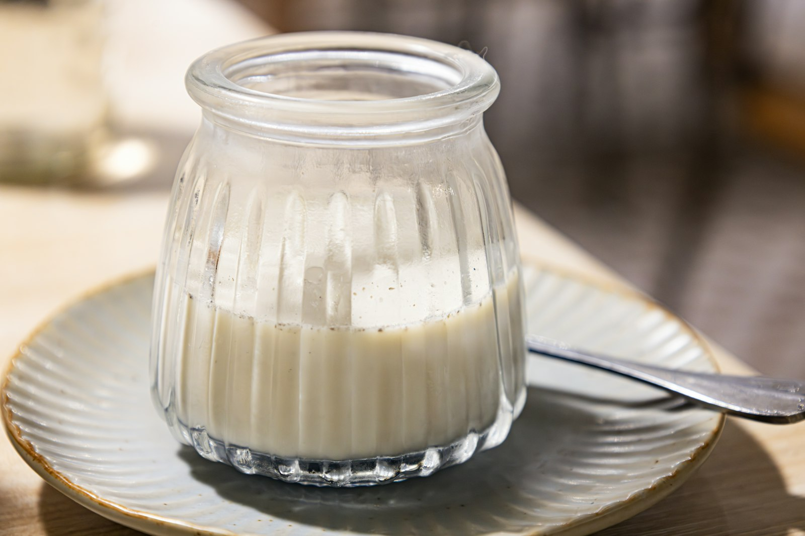
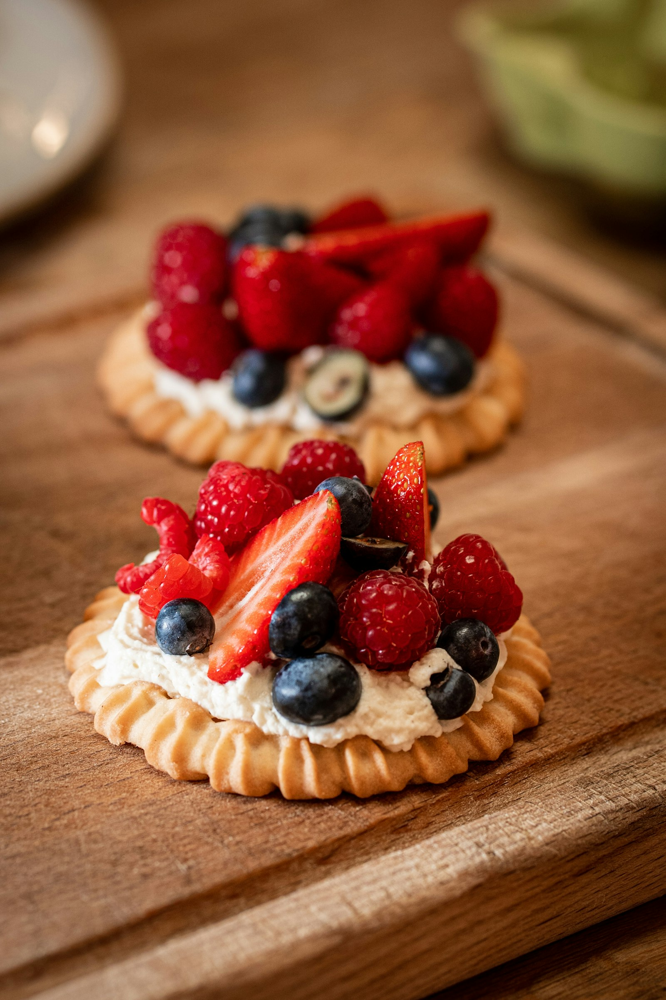

COFFEE & SWEETS
住宅街の角にある、小さな喫茶店です。
コーヒーは一杯ずつハンドドリップで。
おやつは毎朝、お店で手作りしています。

こもれびブレンド一杯ずつハンドドリップで
瓶のミルクプリンやさしい甘さの、なめらかなプリン
ベリーのタルトその時いちばんおいしい果物で| 営業時間 | 10:00〜18:00（ラストオーダー 17:30） |
| 定休日 | 水曜日・第3木曜日 |
| 席 | 10席 |
| 駐車場 | 2台 |
見本のため、ボタンは押しても動きません。実際のページでは、電話とInstagramにつながります。